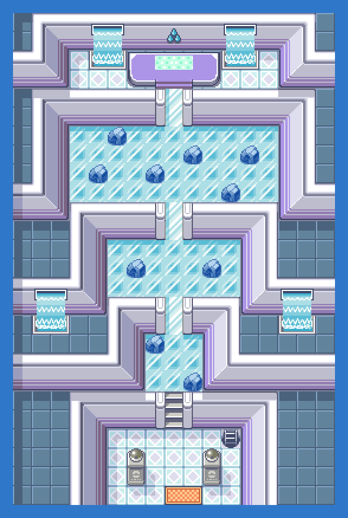
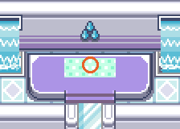

PokémonEMMA'S EMERALD
OFFICIAL Strategy Guide
Sootopolis City Gym 1F
TIP
No wild Pokémon in the grass here. Time of day: M = morning (6–10), D = day (10–19), E = evening (19–20), N = night (20–6).
Event 1: Gym Battle: JUAN

Water-type on an ice-floor puzzle. Grass and Electric moves; Kingdra takes Dragon or Fairy. Reward: Rain Badge and the Tera Orb.

CAUTION
Cap is 46 until you win. On Hard, opponents can Terastallize from this badge on.Battle
| Leader JUAN: Whiscash LV44; Sealeo LV44; Crawdaunt LV45; Kingdra LV45; Milotic LV46 Hard: Luvdisc LV43; Whiscash LV44; Sealeo LV44; Crawdaunt LV45; Kingdra LV45; Milotic LV46 (ITEM_SITRUS_BERRY) Easy: Luvdisc LV41; Whiscash LV41; Sealeo LV43; Crawdaunt LV43; Kingdra LV46 |
Trainers
| ALeader JUAN: Whiscash LV44; Sealeo LV44; Crawdaunt LV45; Kingdra LV45; Milotic LV46 |
79